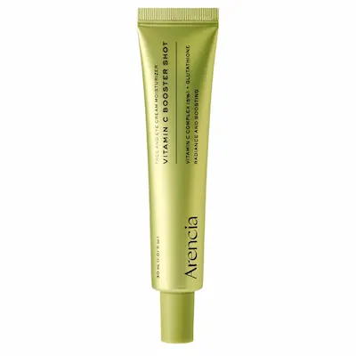
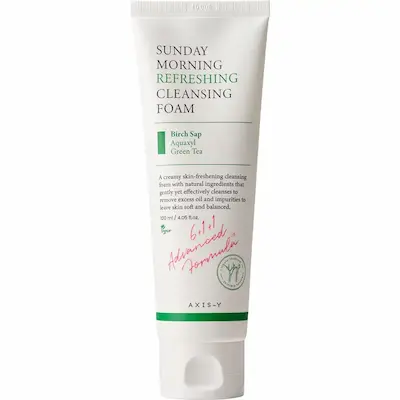
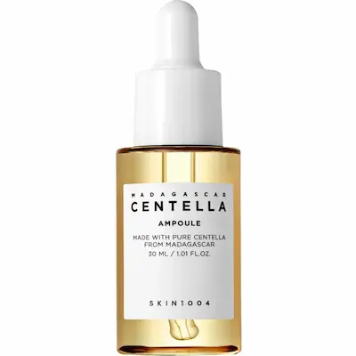
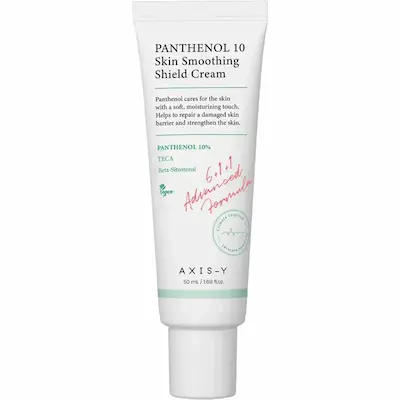
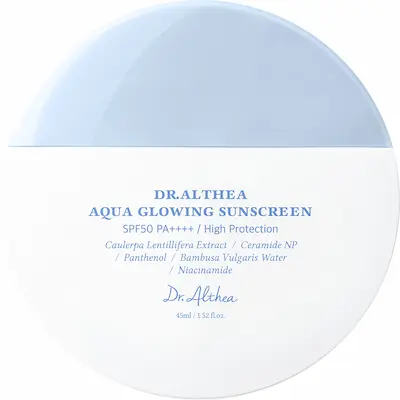
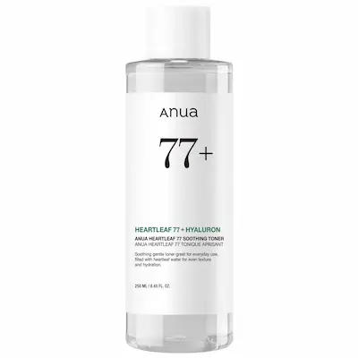

ARENCIA Vitamin C Booster Shot — осветляющая сыворотка для лица
Сыворотка для ухода за тусклой кожей, неровным тоном и следами постакне. Разбираем формулу ARENCIA Vitamin C Booster Shot с 5% производного витамина C (3-O-Ethyl Ascorbic Acid), ниацинамидом и дополнительными ухаживающими компонентами, которые помогают поддерживать увлажнённость и ухоженный вид кожи. Отдельно рассматриваем, кому может подойти средство, как постепенно включить его в уход и на что обратить внимание при чувствительной коже.
Почему эта сыворотка заслуживает внимания?
ARENCIA Vitamin C Booster Shot — сыворотка для лица, предназначенная для ухода за тусклой кожей, неровным тоном и следами постакне. При выборе такого средства важно учитывать не только заявленные активные компоненты, но и особенности всей формулы, а также индивидуальную переносимость кожи.
В формуле используется 3-O-Ethyl Ascorbic Acid — стабильное производное витамина C, которое применяется в косметике для ухода за кожей с неоднородным тоном и видимыми пигментными следами. В сочетании с ниацинамидом и другими ухаживающими компонентами оно делает формулу интересной для тех, кто хочет улучшить внешний вид кожи и сделать её тон более ровным. Результат зависит от состава средства, регулярности применения и индивидуальных особенностей кожи.
В этом обзоре мы разберём заявленную концентрацию 3-O-Ethyl Ascorbic Acid 5%, роль дополнительных ингредиентов, особенности использования сыворотки и способы постепенного включения в ежедневный уход. Также рассмотрим, кому средство может подойти и на что обратить внимание при чувствительной коже.
Текстура и первое использование
ARENCIA Vitamin C Booster Shot имеет лёгкую гелево-кремовую текстуру, которую в отзывах часто описывают как комфортную, увлажняющую и не слишком тяжёлую. Пользователи отмечают, что средство легко распределяется по коже и быстро впитывается, не оставляя выраженного липкого или жирного слоя. При этом отдельным пользователям формула кажется более насыщенной, поэтому ощущения могут различаться в зависимости от типа кожи и количества нанесённого продукта.
По отзывам, после нанесения кожа ощущается более мягкой и увлажнённой, а финиш выглядит естественным, с лёгким эффектом сияния. Некоторые пользователи также отмечают, что сыворотка комфортно ощущается под макияжем и солнцезащитным кремом. Однако это не гарантирует одинакового результата для всех: на жирной коже даже лёгкая кремовая текстура может ощущаться иначе, особенно если использовать несколько насыщенных продуктов одновременно.
Судя по отзывам, средство может быть интересным для нормальной, комбинированной и склонной к сухости кожи, особенно если помимо тусклого тона хочется поддерживать увлажнённость. При жирной или склонной к закупорке пор коже лучше начать с небольшого количества и понаблюдать за реакцией. Несмотря на положительные отзывы о переносимости, чувствительной коже также рекомендуется предварительно провести тест на небольшом участке.
При первом использовании наноси сыворотку тонким слоем после очищения и, если используешь, водного тоника. Затем можно нанести увлажняющий крем. Утром обязательно заверши уход солнцезащитным средством широкого спектра действия с SPF 30 или выше. Если появляются выраженное жжение, раздражение или стойкое покраснение, прекрати использование.
Отзывы о текстуре и личных ощущениях субъективны: они помогают понять, как средство воспринимают другие пользователи, но не гарантируют такой же опыт для каждого типа кожи.


С какими средствами сочетать ARENCIA Vitamin C Booster Shot?
ARENCIA Vitamin C Booster Shot можно сочетать с базовыми средствами корейского ухода, которые помогают поддерживать увлажнённость кожи, её защитный барьер и комфорт. Для этой рутины подойдут продукты ANUA, SKIN1004, AXIS-Y и Dr. Althea. Необязательно использовать все средства одновременно: достаточно подобрать очищение, увлажняющий крем и солнцезащиту, а дополнительные этапы добавлять по потребностям кожи.
1. Очищение — AXIS-Y Sunday Morning Refreshing Cleansing Foam
Мягкая пенка с низким pH поможет удалить загрязнения и излишки себума перед нанесением сыворотки. Выбирай количество средства и частоту очищения с учётом типа кожи, избегая ощущения сухости и стянутости после умывания.
2. Дополнительное увлажнение — SKIN1004 Madagascar Centella Ampoule
Водянистая ампула с центеллой азиатской и увлажняющими компонентами подойдёт тем, кто хочет добавить в уход лёгкий слой увлажнения. Её можно наносить после очищения, а затем использовать ARENCIA Vitamin C Booster Shot. Если кожа чувствительная, вводи продукты постепенно и следи за реакцией.
3. Увлажняющий крем — AXIS-Y Panthenol 10 Skin Smoothing Shield Cream
Формула с 10% пантенола, центеллой и церамидом NP помогает поддерживать увлажнённость и защитный барьер кожи. Крем можно использовать после сыворотки, чтобы завершить уход и уменьшить ощущение сухости. При жирной коже наноси небольшое количество и оцени комфортность финиша.
4. Солнцезащита — Dr. Althea Aqua Glowing Sunscreen SPF50+ PA++++
Утром заверши уход солнцезащитным средством широкого спектра действия. SPF особенно важен, если ты работаешь над уменьшением заметности пигментных пятен и следов постакне. Наноси средство в достаточном количестве и обновляй по инструкции, особенно при длительном пребывании на улице.
5. Дополнительный этап — ANUA Heartleaf 77% Soothing Toner
Тонер с экстрактом хауттюйнии можно добавить после очищения, если коже требуется дополнительное увлажнение и успокаивающий этап. Он не является обязательным: при простой рутине можно сразу перейти к ARENCIA Vitamin C Booster Shot.
Как выстроить уход?
Утром: AXIS-Y Sunday Morning Refreshing Cleansing Foam → ANUA Heartleaf 77% Soothing Toner при необходимости → ARENCIA Vitamin C Booster Shot → AXIS-Y Panthenol 10 Skin Smoothing Shield Cream при необходимости → Dr. Althea Aqua Glowing Sunscreen SPF50+ PA++++.
Вечером: очищение → SKIN1004 Madagascar Centella Ampoule при необходимости → увлажняющий крем AXIS-Y.
Необязательно покупать всю подборку. Для начала достаточно ARENCIA Vitamin C Booster Shot, комфортного увлажняющего крема и солнцезащиты. Проверяй актуальные составы на упаковке и прекращай использование продукта, если появляется выраженное раздражение.
Подборка средств от BeautyPanda
Редакционная подборка Estetica Lens.
В подборке представлены корейские кремы для лица с разными
направлениями ухода. Знакомимся с продуктами, их назначением и
особенностями формул.
Наличие и актуальные условия покупки можно уточнить
непосредственно у
BeautyPanda.

AXIS-Y Sunday Morning Refreshing Cleansing Foam
Высокая эффективность
Очищение

SKIN1004 Madagascar Centella Ampoule
Высокая эффективность
Дополнительное увлажнение

AXIS-Y Panthenol 10 Skin Smoothing Shield Cream
Высокая эффективность
Увлажняющий крем.

Dr. Althea Aqua Glowing Sunscreen SPF50+ PA++++
Высокая эффективность
Солнцезащита.

ANUA Heartleaf 77% Soothing Toner
Высокая эффективность
Дополнительный этап — тонер.
Разбор состава ARENCIA Vitamin C Booster Shot
Главная особенность ARENCIA Vitamin C Booster Shot — сочетание производного витамина C, ниацинамида и дополнительных ухаживающих компонентов. Формула ориентирована прежде всего на уход за тусклой кожей, неровным тоном и видимыми следами постакне. При этом в составе есть ингредиенты, которые помогают поддерживать увлажнённость и комфорт кожи, поэтому средство не ограничивается только осветляющим направлением.
Согласно опубликованному списку ингредиентов, формула содержит 3-O-Ethyl Ascorbic Acid в концентрации 50 000 ppm (5%). Также в ней присутствуют ниацинамид, глутатион, пантенол, аллантоин, витамин E и дополнительные формы витамина C. Рассмотрим, какую роль выполняют основные компоненты и чего реалистично ожидать от такого сочетания.
1. 3-O-Ethyl Ascorbic Acid — 5%
Это производное витамина C, которое используется в косметике для ухода за кожей с тусклым видом и неровным тоном. Оно обладает антиоксидантными свойствами и помогает улучшать внешний вид кожи, делая её более сияющей при регулярном использовании.
Почему это важно: компонент делает сыворотку интересной для ухода за следами постакне и видимыми пигментными пятнами. Однако результат зависит от индивидуальных особенностей кожи, регулярности применения и использования солнцезащиты.
Важный нюанс: концентрация 5% относится именно к 3-O-Ethyl Ascorbic Acid, а не к чистой аскорбиновой кислоте. В списке ингредиентов отдельно указана Ascorbic Acid в количестве 10 ppm, то есть в значительно меньшей концентрации.
2. Niacinamide — ниацинамид
Ниацинамид — форма витамина B3, которая помогает поддерживать защитный барьер кожи, уменьшать потерю влаги и улучшать внешний вид неровного тона. Он также может быть полезен для кожи, склонной к повышенной выработке себума.
Почему это важно: в сочетании с производным витамина C ниацинамид дополняет осветляющее направление формулы и делает её актуальной для ухода за тусклой кожей и следами постакне. Точная концентрация ниацинамида в продукте не указана в опубликованном списке ингредиентов.
3. Glycerin, Methylpropanediol и Butylene Glycol
Это увлажняющие компоненты, которые помогают притягивать и удерживать воду в верхних слоях кожи, улучшая её мягкость и комфорт. Они также участвуют в формировании приятной текстуры средства и помогают равномерно распределять формулу.
Почему это важно: увлажняющая основа дополняет действие активных ингредиентов и помогает уменьшить ощущение сухости. Тем не менее при обезвоженной коже сыворотку может потребоваться дополнить отдельным кремом.
4. Glutathione — глутатион
Глутатион — антиоксидант, который участвует в защите клеток от окислительного стресса. В косметике его используют в формулах, ориентированных на сияние кожи и уход за неоднородным тоном.
Почему это важно: он дополняет антиоксидантное направление сыворотки вместе с производным витамина C и витамином E. Однако наличие глутатиона само по себе не гарантирует устранения пигментных пятен или следов постакне.
5. Panthenol и Allantoin — пантенол и аллантоин
Пантенол помогает поддерживать увлажнённость и защитный барьер кожи, а аллантоин используется в косметике для смягчения и успокаивающего ухода. Эти компоненты особенно уместны в формулах, где основное внимание уделяется активам для улучшения внешнего вида кожи.
Почему это важно: они дополняют формулу компонентами, направленными на комфорт кожи. При этом наличие успокаивающих ингредиентов не исключает индивидуальной реакции на сыворотку.
6. Tocopherol, Ascorbyl Glucoside и Sodium Ascorbyl Phosphate
Tocopherol — форма витамина E с антиоксидантными свойствами. Ascorbyl Glucoside и Sodium Ascorbyl Phosphate — дополнительные производные витамина C, которые расширяют антиоксидантный профиль формулы.
Почему это важно: в сыворотке используется не один компонент, связанный с витамином C, а сочетание нескольких форм. Однако по одному только списку ингредиентов нельзя определить, насколько каждая из них влияет на конечный результат.
7. Смягчающие компоненты и основа формулы
Caprylic/Capric Triglyceride, Cetyl Ethylhexanoate, Cetearyl Olivate и Sorbitan Olivate помогают смягчать кожу и формировать текстуру средства. Такие ингредиенты делают формулу более комфортной при нанесении и дополняют увлажняющие компоненты.
Почему это важно: ощущения от сыворотки зависят не только от активных ингредиентов, но и от всей основы формулы. Поэтому при выборе стоит учитывать собственные предпочтения по текстуре и реакцию кожи.
Итог: на что ориентирована формула?
Состав ARENCIA Vitamin C Booster Shot сочетает компоненты для ухода за тусклой кожей и неровным тоном с увлажняющими и смягчающими ингредиентами. Главный акцент — 5% производного витамина C, дополненного ниацинамидом, глутатионом и несколькими формами витамина C.
Средство стоит рассматривать прежде всего как часть ухода за тусклостью, неоднородным тоном и видимыми следами постакне. Оно не является самостоятельным лечением акне и не гарантирует устранения стойкой пигментации. Для более последовательного ухода сочетай сыворотку с увлажняющим кремом и ежедневной солнцезащитой.
Полный состав может отличаться в зависимости от партии и рынка поставки, поэтому перед использованием сверяй список INCI на упаковке своего продукта. При чувствительной коже начни с постепенного введения и предварительного теста на небольшом участке.


Как работает ARENCIA Vitamin C Booster Shot?
Формула сочетает компоненты, направленные на улучшение внешнего вида кожи, поддержание увлажнённости и антиоксидантный уход. Основную роль в осветляющем направлении играет производное витамина C, а дополнительные ингредиенты дополняют его действие.
1. Уход за тусклой кожей
3-O-Ethyl Ascorbic Acid 5% — производное витамина C с антиоксидантными свойствами, используемое в косметике для ухода за кожей с неоднородным тоном.
2. Поддержка более ровного тона
Ниацинамид и дополнительные производные витамина C дополняют формулу для ухода за тусклостью и видимыми следами постакне. Выраженность результата зависит от состояния кожи и регулярности ухода.
3. Антиоксидантный уход
Глутатион и витамин E дополняют антиоксидантный профиль средства и помогают защищать компоненты кожи от окислительного стресса в рамках косметического ухода.
4. Увлажнение и комфорт
Глицерин, пантенол и другие увлажняющие компоненты помогают поддерживать увлажнённость и мягкость кожи, дополняя действие активной части формулы.
5. Поддержка результата
Увлажняющий крем и солнцезащитное средство SPF 30–50 помогают сделать уход более полноценным. Регулярная фотозащита особенно важна при склонности к пигментным пятнам и следам постакне.
Важно: это схема назначения основных групп компонентов, а не последовательность биохимических реакций и не гарантия конкретного результата. Эффект косметического средства индивидуален.
Где найти AXIS-Y TXA 2.5% Intensive?
AXIS-Y TXA 2.5% Intensive представлена у BeautyPanda. Уточнить актуальное наличие и стоимость можно непосредственно у продавца.
Магазины Beauty Panda в Молдове:
📍 Сорока
str. Grigore Vieru 9B, Soroca, Moldova, MD-3001
📍 Дрокия
str. 31 August 20/C, Drochia, Moldova
*Наличие, стоимость и условия покупки рекомендуется уточнять у продавца перед визитом. Ссылка ведёт на страницу продавца в Instagram.
Часто задаваемые вопросы
Можно ли использовать ARENCIA Vitamin C Booster Shot каждый день?
Частота применения зависит от инструкции производителя и индивидуальной переносимости кожи. Если вы только начинаете использовать сыворотку, вводите её постепенно и следите за реакцией. При хорошей переносимости можно перейти к регулярному применению согласно рекомендациям на упаковке. При выраженном раздражении прекратите использование.
Подходит ли сыворотка для кожи, склонной к акне?
Средство может быть полезно в уходе за кожей с видимыми следами после высыпаний и неровным тоном. Однако это косметическая сыворотка, а не специализированное средство для лечения акне. Если у вас активные воспаления или кожа склонна к раздражению, подбирайте уход с учётом её состояния и индивидуальной переносимости.
Помогает ли ARENCIA Vitamin C Booster Shot от постакне и пигментных пятен?
Производное витамина C и ниацинамид используются в косметическом уходе для улучшения внешнего вида неровного тона и тёмных следов после воспалений. При регулярном применении сыворотка может помочь сделать некоторые пигментные следы менее заметными, однако результат зависит от их происхождения, особенностей кожи и продолжительности ухода. Днём важно использовать солнцезащитное средство широкого спектра действия с SPF 30 или выше.
Действительно ли сыворотка содержит 5% витамина C?
Заявленная концентрация 5% относится к 3-O-Ethyl Ascorbic Acid — производному витамина C, а не к чистой аскорбиновой кислоте (Ascorbic Acid). Это важно учитывать при сравнении сыворотки с продуктами, в которых используется другая форма витамина C.
Можно ли сочетать сыворотку с ретинолом и кислотами?
Совместимость зависит от конкретных средств и чувствительности кожи. Одновременное применение нескольких активных продуктов может повысить риск сухости и раздражения. Если кожа чувствительная или вы только начинаете использовать активный уход, вводите продукты по одному и при необходимости чередуйте их по дням.
Можно ли использовать сыворотку вместе с ниацинамидом?
В общем случае производные витамина C и ниацинамид можно сочетать в одном уходе. Однако перед добавлением отдельной сыворотки с ниацинамидом проверьте состав ARENCIA Vitamin C Booster Shot: если этот компонент уже присутствует в формуле, дополнительное средство может быть необязательным.
Подойдёт ли сыворотка жирной коже?
Это зависит от индивидуальных предпочтений и реакции кожи. Начните с небольшого количества и оцените, насколько комфортно средство ощущается после нанесения и сочетается с остальным уходом. Если появляется стойкий дискомфорт или раздражение, прекратите использование.
Что делать, если после нанесения появляется жжение или покраснение?
При выраженном или продолжительном жжении, сильном покраснении, зуде либо отёке прекратите использование средства. При необходимости аккуратно смойте его и временно исключите другие активные продукты. Если симптомы сильные, сохраняются или усиливаются, обратитесь к врачу.
Когда можно ожидать первые результаты?
Сроки индивидуальны и зависят от состояния кожи, типа пигментных следов и регулярности применения. Не стоит ожидать мгновенного исчезновения пятен. Оценивайте изменения постепенно и используйте солнцезащитное средство ежедневно.